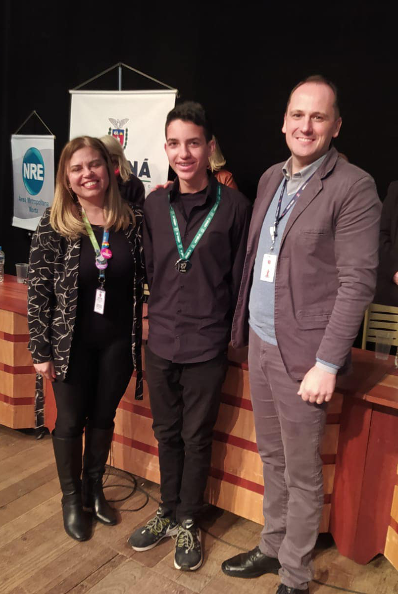

Math
Since 2018, when he was in the 6th year of elementary school, he participated in the Brazilian Public Schools Mathematics Olympiad (OBMEP), where in the first year he took the test, he was classified for the second phase, where, even not knowing the content approached, answered the test and received the honorable mention award for it, the following year, now knowing the challenge that was to come, studied for months, dedicating himself strongly to the content, discovering a great affinity with mathematics, and, performing again the test, he obtained a bronze medal as an award, and along with this medal, the opportunity to participate in the Scientific Initiation Program of the OBMEP (PIC), where he learned a lot about various mathematical contents, receiving a scholarship, with which he could invest in personal things, in addition to buying your Violin.
In 2020, as a result of the pandemic, the OBMEP test was not held, however, students who stood out and dedicated themselves to the PIC program were invited to participate in the special PIC program, continuing with their studies.
Then, in 2021, there was the OBMEP test again, he dedicated himself again, and obtained a silver medal, participating in the award ceremony in July 2022 (photo on the side), being the only medalist in the northern metropolitan region of the state of Paraná. .
In 2022, he took the 1st phase test, qualifying for the 2nd phase, and continues studying to perform the 2nd phase, in search of the gold medal.